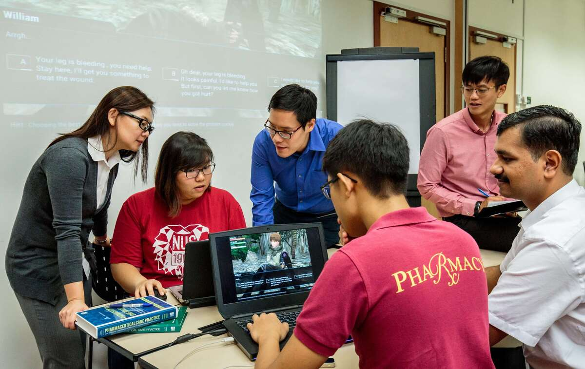

Este mòdul entra en un terreny especialment interessant tant per a l'alumnat com per al professorat: el dels materials multimèdia. Les imatges, els còmics, les infografies i els vídeos breus no són un adorn en l'aula de llengües; són, sovint, la porta d'entrada al contingut. Per a molt alumnat adult amb poca alfabetització, amb poca competència digital o amb una llengua materna llunyana del valencià o de l'espanyol, un bon suport visual fa la diferència entre una activitat que funciona i una activitat que es queda pel camí.
En els mòduls anteriors hem vist com generar i adaptar textos (Mòdul 2) i com treballar la comprensió i la producció oral (Mòdul 3). Ara toca fer visible la llengua. I no només "visible" en el sentit d'afegir una imatge d'il·lustració, sinó visible com a andamiatge cognitiu: una infografia que substitueix tres paràgrafs d'instruccions, un còmic que fa comprensible un diàleg complicat, un vídeo de seixanta segons que contextualitza una situació comunicativa real.
La bona notícia és que la intel·ligència artificial generativa i les eines digitals actuals posen a l'abast de qualsevol docent, sense coneixements tècnics especials, una capacitat de producció multimèdia que fa cinc anys era exclusiva de dissenyadors professionals. Podem generar una imatge feta a mida en trenta segons, una infografia acabada en deu minuts, un vídeo explicatiu breu en mitja hora. La mala notícia —que no és tan mala— és que tota esta capacitat ha d'estar subordinada a un criteri pedagògic clar; si no, el resultat serà bonic però buit.
En este mòdul treballarem quatre blocs de tecnologies —imatges, còmics i narrativa visual, infografies, i vídeos— i culminarem amb una proposta molt concreta d'integració a AULES a través de les Lliçons de Moodle, una eina potentíssima i sovint infrautilitzada que permet gamificar de manera senzilla seqüències d'aprenentatge.
